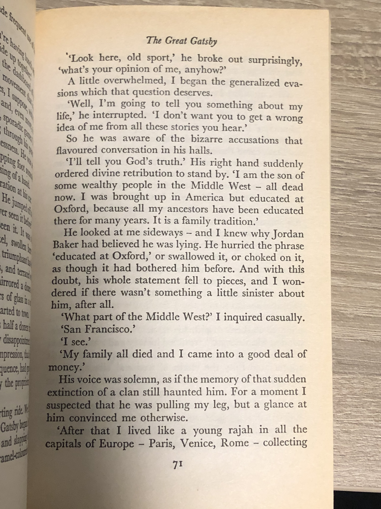
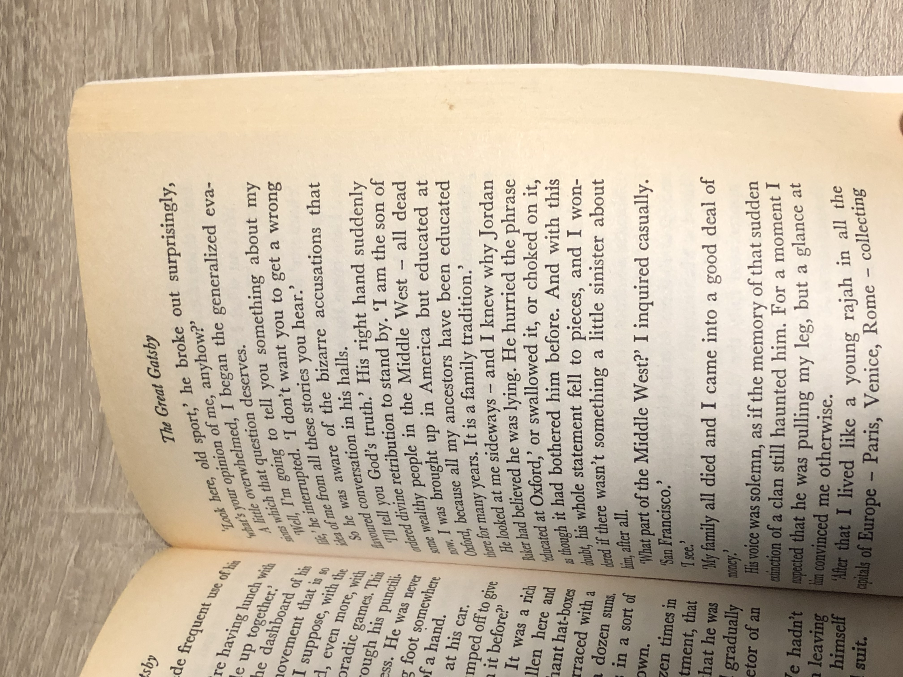
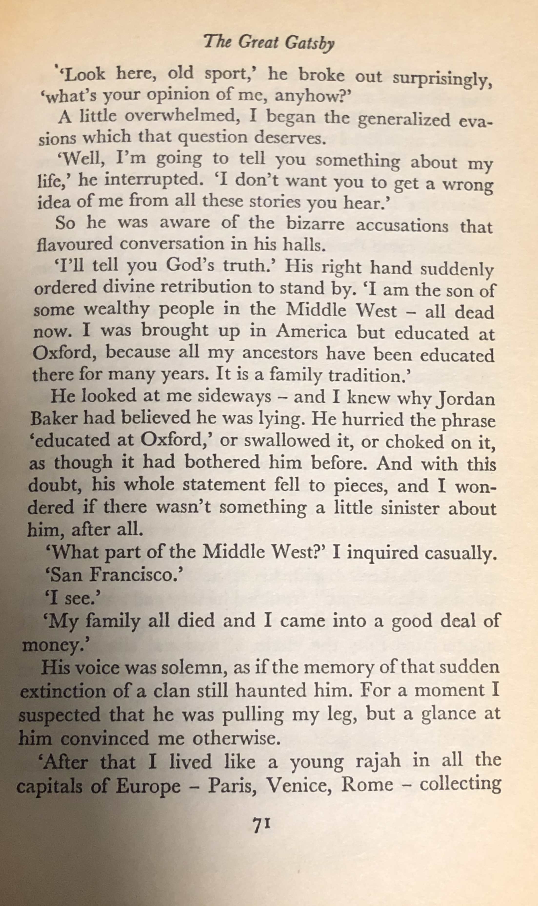
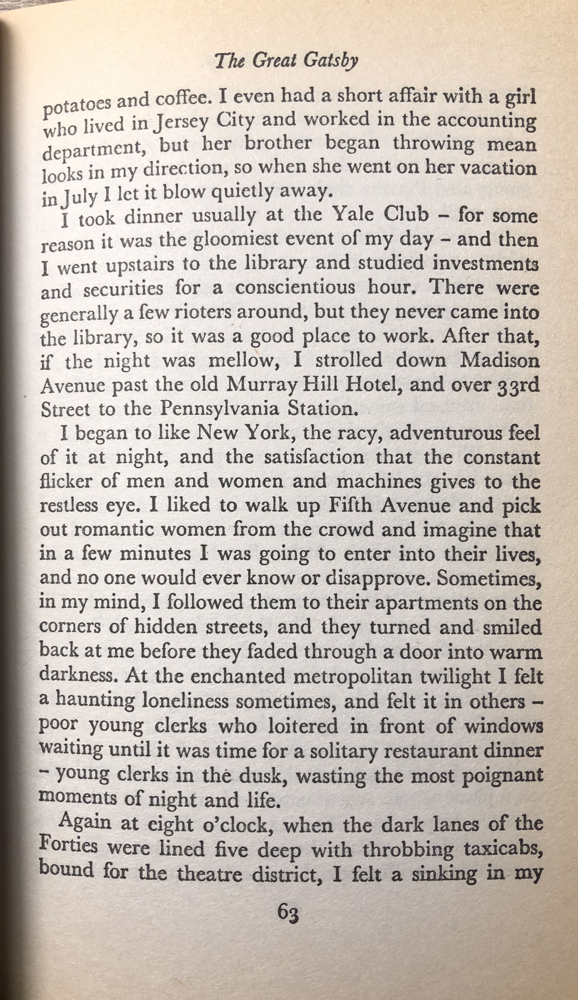

This may sound obvious, but it is imperative that you upload the highest resolution image that you can take.
It is really important that the photo you upload for processing looks more like this 
Than like this: 
If for some reason you cannot do anything to avoid text warping, you can select the "bad photo" button
and the engine will try to fix your photo for you. But it would work best, if you take a photo without text warping in it.
Keep in mind that the second photo is too warped and no type of processing is going to help it.
Make sure your image looks more like this:
Than like this:
If the text in your photo is warped even a little, like in the beginning of this example image:
